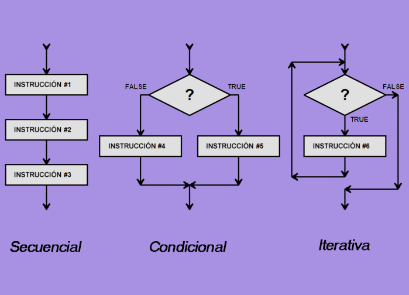

Quiero keke Bienvenido a esta pagina web, para conocer sobre el maravillosos mundo del desarrollo WEB,aprenderemos de conceptos basicos que seran el punto de partida para inciar tu carrera. (Amo mi carrera)

Para comenzar se recomienda seguir esta serie de temas y practicarlos:
La estructura de programación es la forma en que se organiza un programa para que funcione de manera correcta y sea fácil de comprender. Una buena estructura permite mantener el código ordenado, facilita su mantenimiento y reduce la posibilidad de errores. Además, ayuda a que otros programadores puedan entender el funcionamiento del programa con mayor rapidez.

Las estructuras básicas de programación permiten controlar el flujo de ejecución de un programa. Estas se utilizan para tomar decisiones, repetir instrucciones o ejecutar acciones en un orden específico. Gracias a ellas, es posible desarrollar aplicaciones más eficientes y adaptables a diferentes situaciones.

Una estructura de programación bien diseñada mejora la calidad del software y facilita futuras modificaciones. También permite reutilizar código, optimizar recursos y simplificar el proceso de desarrollo. Por ello, conocer y aplicar correctamente estas estructuras es fundamental para cualquier estudiante o profesional de la programación.
Quieres mas info sobre el tema ,revisa aqui:
El leguaje de marcado de hipertexto(HTML) permite estructurar y desplegar el contenido de una pagina web para ello este es un conjunto de elementos identificados con etiquetas, los mas comunes son:
Hacer click aqui para mayor info: